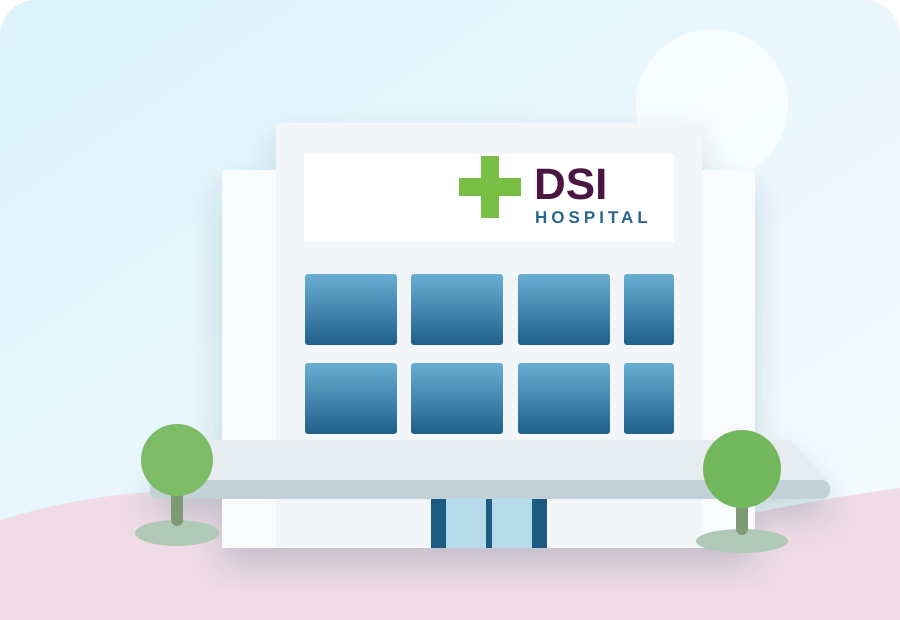
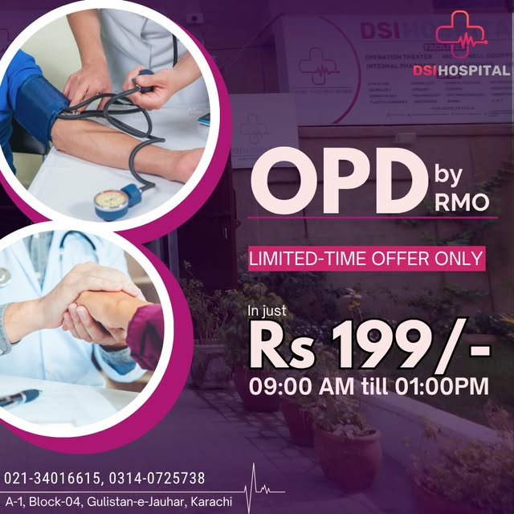
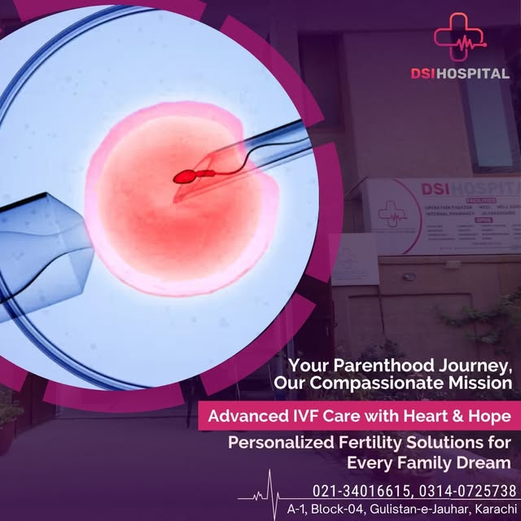
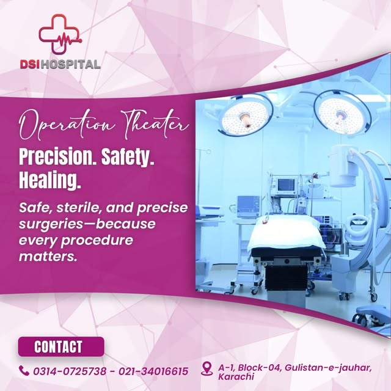
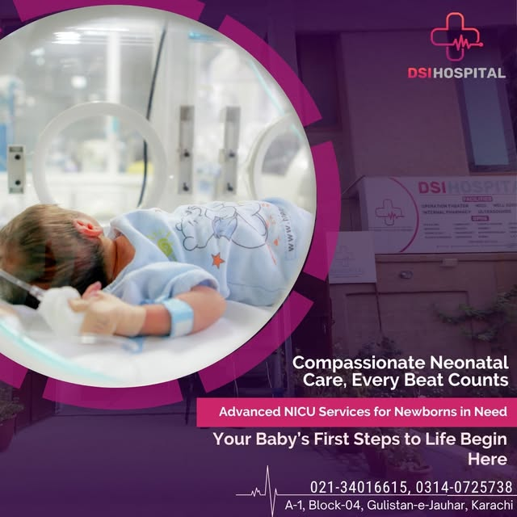
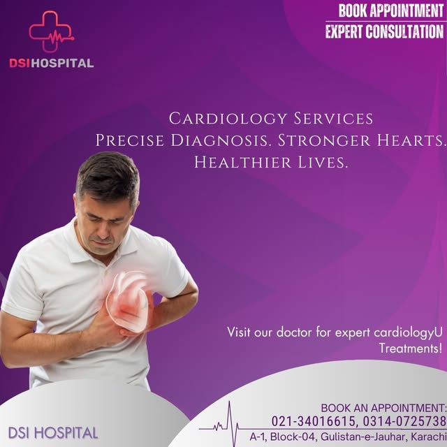

Quality Healthcare For A Healthier Tomorrow
DSI Hospital is a private hospital in Gulistan-e-Jauhar, Karachi — open 24 hours with emergency care, women's health & fertility services, and a wide range of specialties for your family.
& Gynae/Obs Emergency
Gulistan-e-Jauhar, Karachi
& Laboratory

Care for every stage of life
From 24/7 emergency response to advanced fertility care, DSI Hospital brings essential specialties together under one roof in Gulistan-e-Jauhar.
24/7 Emergency
Round-the-clock emergency care with a dedicated 24/7 Gynae & Obs emergency for women.
Call Now →Gynae, Obs & IVF
Compassionate gynecological care, maternity services and advanced IVF & fertility solutions.
Explore →Cardiology & Medicine
Cardiology services, internal medicine and general OPD consultations for everyday health.
Explore →Diagnostics 24/7
In-house laboratory and ultrasound with a 24-hour pharmacy for prescriptions and guidance.
Explore →
📷 DSI Hospital — reception & OPD, from the hospital's official social media
Your Health, Our Priority
Established in 2023 and located at A-1, Block 4, Gulistan-e-Jauhar, DSI Hospital delivers patient-centered care through innovation, compassion and dedication — serving our community with inpatient and outpatient services, advanced diagnostic and surgical facilities, and preventative health programs.
Emergency, Gynae & Obs emergency, pharmacy and laboratory — day and night.
Gynae/obs, IVF & fertility care, NICU and pediatric services.
State-of-the-art operation theaters with expert surgical teams.
WhatsApp appointments, two phone lines and on-site pharmacy.
Real services, real facilities
A look at our departments from DSI Hospital's official social media pages.

IVF & Fertility
Operation Theaters
NICU Care
CardiologyFollow @dsi_hospital on Instagram for health tips and service updates.
Meet our medical team
Our multidisciplinary team of healthcare professionals is led by experienced consultants. Call or WhatsApp 0314-0725738 for current consultant schedules and timings.
Dr. Sheeba Irum
Leads DSI Hospital's women's health services — gynecology, obstetrics and cervical-cancer awareness initiatives.
Request appointment →Fertility Specialists
Personalized fertility solutions and advanced IVF care with heart and hope.
Request appointment →General Physicians
Daily general OPD consultations, 9:00 AM – 1:00 PM, plus emergency physicians around the clock.
Request appointment →Need DSI Hospital today?
Emergency, pharmacy and laboratory are open 24 hours. For appointments and enquiries, call or message us on WhatsApp.